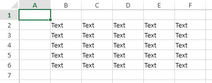
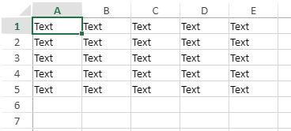
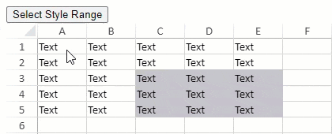

SpreadJS provides an easy way to access a range of cells in the sheet area. You can conveniently get the range information in the sheet using the getRange method.
It allows users to conveniently choose which way to obtain range information in the sheet area according to their requirements, either through row and column index, or via range address. This is covered in the following two sections.
You can get a series of cells in a range of sheet area using the getRange(row, col, rowCount, colCount, sheetArea) method. This method uses parameter such as row index, column index, row count of range, and column count. In this manner, you get a range of cells by row index and column index in the specified sheet area.
The following image displays an example of getting cell range by row and column index.

The following code snippet depicts how to use getRange method to specify range B2:F6 with row and column index.
| Javascript |
Copy Code
|
|---|---|
<script>
$(document).ready(function () {
// Initializing Spread
var spread = new GC.Spread.Sheets.Workbook(document.getElementById('ss'), { sheetCount: 1 });
// Get the activesheet
var sheet = spread.getActiveSheet();
// Get range by row and column info
var range = sheet.getRange(1, 1, 5, 5, GC.Spread.Sheets.SheetArea.viewport);
range.text("Text");
});
</script>
|
|
You can also get a range of cells in the sheet area using the getRange(address, sheetArea) method. This method gets a range of cells in the specified sheet area using range address string.
The following image displays an example of getting cell range by range address.

The following code snippet depicts how to use getRange method to specify range A1:E5 with range address string.
| Javascript |
Copy Code
|
|---|---|
<script>
$(document).ready(function () {
// Initializing Spread
var spread = new GC.Spread.Sheets.Workbook(document.getElementById('ss'), { sheetCount: 1 });
// Get the activesheet
var sheet = spread.getActiveSheet();
// Get range by range address
var range = sheet.getRange('A1:E5', GC.Spread.Sheets.SheetArea.viewport);
range.text("Text");
});
</script>
|
|
You can get a range of cells based on the type of data available in the sheet using the getUsedRange method. It quickly obtains the maximum range of different types of data using the enumeration option UsedRangeType as a parameter.
This helps to obtain different data ranges quickly throughout a worksheet when you are working with different forms of data such as sparklines, charts, slicers, and so on.

The following code sample shows how to select all the style applied cell ranges in a worksheet.
| JavaScript |
Copy Code
|
|---|---|
function getRangeStyle() { var sheet = spread.getSheet(0); var styleRange = sheet.getUsedRange(GC.Spread.Sheets.UsedRangeType.style); // styleRange:{row: 2, col: 2, rowCount: 3, colCount: 3} sheet.setSelection(styleRange.row, styleRange.col, styleRange.rowCount, styleRange.colCount, GC.Spread.Sheets.SheetArea.viewport, GC.Spread.Sheets.StorageType.style); } |
|